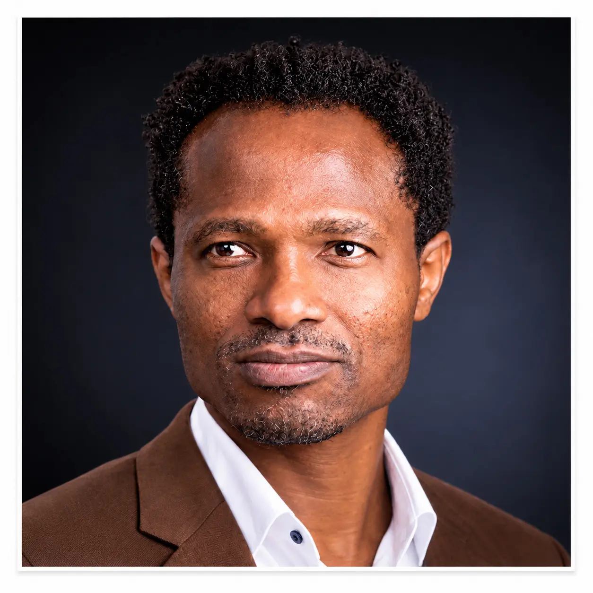
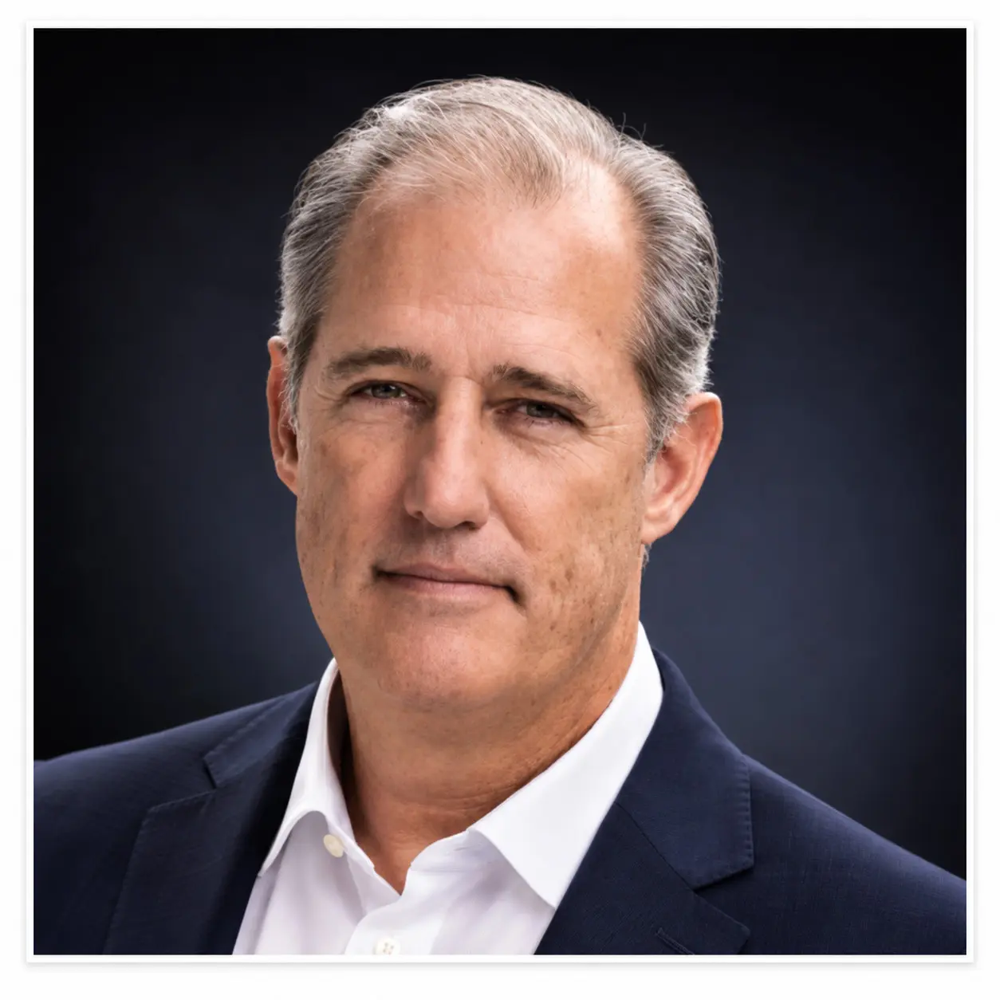

Strategic Advisors
Expertise. Insight. Connections.
Philip Sanger
Strategic Advisor — Healthcare
Physician, entrepreneur, and healthcare investor with decades of experience building and supporting innovative healthcare companies. Philip is a Managing Partner of TEXO Ventures and has founded and invested in multiple healthcare ventures. Combining extensive clinical experience with healthcare entrepreneurship and venture investment, he brings deep expertise in healthcare innovation, commercialization, strategic growth, and helping emerging technologies navigate the complex U.S. healthcare market.
Phil M. Dolbow
Strategic Advisor — Defense &
National Security
Retired U.S. Army Sergeant Major and cybersecurity executive with more than 35 years of experience in IT security and systems engineering. Phil served 21 years in the U.S. Army, including leadership roles in information operations and assignments across Europe, Africa, South America, and the Middle East. His career also includes work supporting government, defense, and intelligence organizations, with expertise spanning cybersecurity, cloud systems, vulnerability assessment, and mission-critical technology.

Osh Agabi
Strategic Advisor — Deep
Technology & Innovation
Founder and CEO of Koniku, Osh Agabi is a technology entrepreneur and pioneer in synthetic neurobiology, developing systems that combine biological intelligence with advanced computing. Through Koniku, he is advancing next-generation sensory technology designed to detect and interpret complex chemical signatures. Osh brings USARunway deep expertise in emerging technology, artificial intelligence, biotechnology, commercialization, and translating breakthrough scientific innovation into real-world applications across security, healthcare, and industry.

Zac Stamples
Strategic Advisor — Defense &
National Security Technology
Former U.S. Navy officer, technology entrepreneur, and defense innovation leader with more than two decades of military service. Zac previously directed the Center for Cyber Warfare Research at the Naval Postgraduate School and received the Secretary of the Navy’s Innovation Catalyst Award. As Founder and CEO of Fathom5, he brings extensive expertise in cybersecurity, artificial intelligence, maritime technology, and the development of advanced technologies for defense and national-security applications.